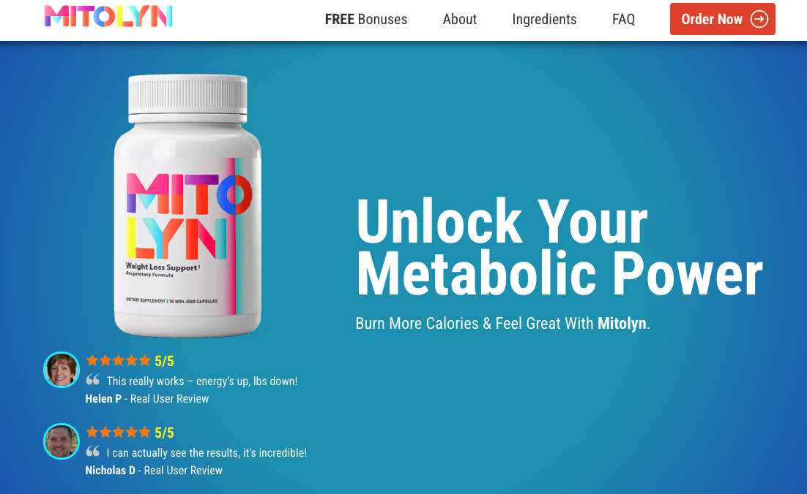
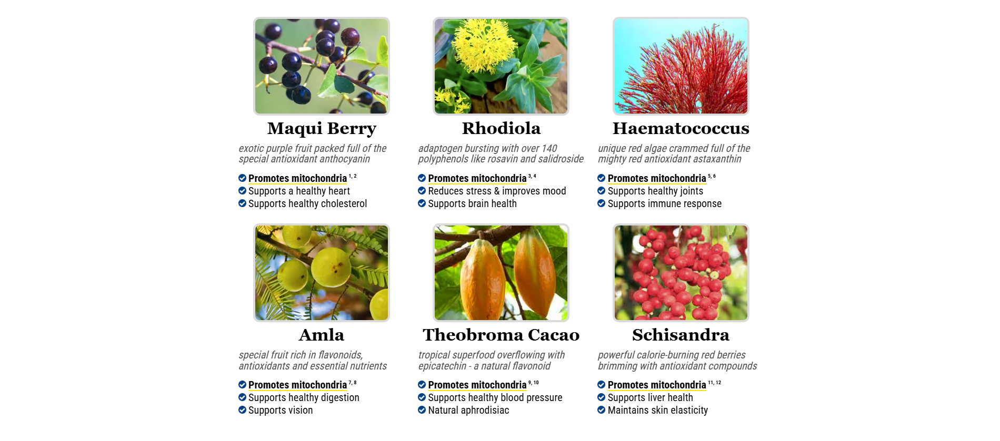
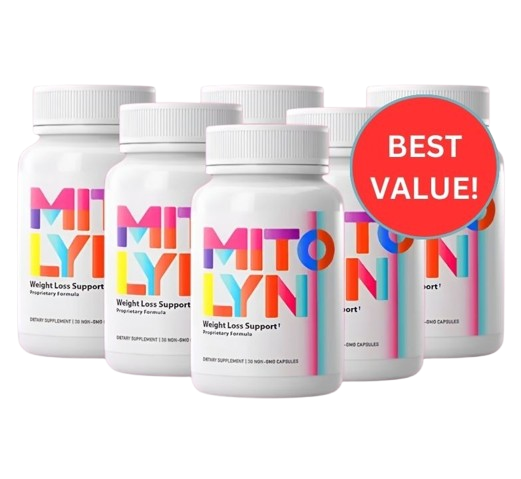

Mitolyn Reviews (CRITICAL DOCTOR BREAKDOWN)
MITOLYN Reviews: (We Tried It 365) My Honest Review
.jpg)
Frustrated by supplements that overpromise and underdeliver? Mitolyn breaks the mold. Rather than leaning on harsh stimulants or gimmicky shortcuts, this powerful metabolism-supporting formula goes straight to the source: your body’s cellular powerhouses — the mitochondria.
According to groundbreaking research from Harvard, individuals struggling with weight often have sluggish or underperforming mitochondria. These tiny organelles are responsible for converting nutrients into usable energy — and when they’re not firing on all cylinders, your fat-burning potential takes a hit. Mitolyn is designed to revitalize these cellular engines, helping to reignite your metabolism from within and support more efficient fat burning.
In this in-depth review, we’ll explore the science behind Mitolyn, break down its key ingredients, and find out if it truly lives up to the buzz. Could this be the breakthrough your metabolism has been waiting for?
What Is Mitolyn? A Science-Based Fat Loss Solution
Mitolyn is a natural metabolism-supporting supplement that stands out in the crowded weight loss market. Unlike typical diet pills that rely on caffeine and other stimulants, Mitolyn works at the cellular level to help your body burn fat more efficiently.
The formula combines six powerful plant-based ingredients:
- Maqui Berry - A potent antioxidant-rich superfruit
- Rhodiola - An adaptogenic herb for energy and stress response
- Haematococcus - Source of powerful astaxanthin
- Amla - Traditional Indian superfruit
- Theobroma Cacao - Pure form of chocolate's active compounds
- Schisandra - Ancient berry known for metabolic support
Each ingredient is carefully selected based on scientific research showing its ability to support mitochondrial health - the key to unlocking your body's natural fat-burning potential.
Manufactured in the USA in an FDA-registered, GMP-certified facility, Mitolyn maintains strict quality standards. It's non-GMO, soy-free, and dairy-free, making it suitable for most dietary preferences.
How Mitolyn Works: The Science Behind Mitochondria & Metabolism
Think of mitochondria as tiny power plants in your cells. When they're working efficiently, they turn both food and stored fat into energy. When they're not, your metabolism slows down and fat starts accumulating.
Here's how Mitolyn supports your body's natural fat-burning processes:
- Enhances Mitochondrial Function: The ingredients help your cellular "power plants" work more efficiently, potentially increasing your metabolic rate
- Supports Fat Oxidation: Better mitochondrial health means your body can convert stored fat into usable energy more effectively
- Improves Energy Production: Users often report sustained energy throughout the day without the crashes associated with stimulants
Recent research from Harvard and other institutions confirms the link between mitochondrial health and weight management. People who struggle with weight often have fewer or less efficient mitochondria, making it harder to lose fat through diet and exercise alone.
What makes Mitolyn unique is its targeted approach. Instead of just suppressing appetite or artificially boosting energy, it supports your body's natural fat-burning mechanisms at the cellular level.
Ready to optimize your metabolism at the cellular level? Try Mitolyn with a 90-day satisfaction guarantee .
Key Ingredients and Their Benefits: The Power Behind Mitolyn
Each ingredient in Mitolyn was selected based on scientific research supporting its role in metabolic health. Let's examine what makes this formula effective:
Maqui Berry
This rare berry contains powerful anthocyanins that studies show can:
- Promote healthy fat metabolism
- Support mitochondrial thermogenesis
- Help regulate blood sugar levels
Rhodiola (Golden Root)
A well-researched adaptogenic herb that:
- Increases ATP production in muscle cells
- Enhances physical endurance
- Helps combat stress-related weight gain
Haematococcus (Astaxanthin)
This potent antioxidant has been shown to:
- Stimulate mitochondrial biogenesis
- Improve insulin sensitivity
- Support cellular energy production
Amla (Indian Gooseberry)
Traditional superfruit that research shows can:
- Enhance mitochondrial function
- Support healthy metabolism
- Provide powerful antioxidant protection
Theobroma Cacao
Pure form of cocoa's active compounds that:
- Support mitochondrial structure
- Enhance cellular energy production
- Improve metabolic health
Schisandra
An ancient berry that studies indicate can:
- Boost mitochondrial biogenesis
- Support cellular energy levels
- Enhance physical performance
What sets Mitolyn apart is how these ingredients work together synergistically. Each component plays a specific role in supporting mitochondrial health and metabolic function, creating a comprehensive approach to fat loss and energy production.
Pros of Mitolyn: Key Advantages Worth Considering
After thorough research and analysis, here are the standout benefits that make Mitolyn worth considering:
Science-Backed Formula
- Each ingredient supported by research studies
- Targets root cause of slow metabolism
- Focus on cellular-level improvements
Quality Manufacturing
- Made in USA in FDA-registered facility
- GMP-certified production standards
- Third-party tested for purity
Natural and Safe
- No artificial stimulants or additives
- Non-GMO, soy-free, dairy-free
- No reported side effects
Risk-Free Purchase
- 90-day money-back guarantee
- Try it without financial risk
- Excellent customer support
Practical Benefits
- Sustainable energy throughout the day
- No jitters or crashes
- Easy to incorporate into daily routine
These advantages show why Mitolyn stands out in the crowded supplement market. It's not just another weight loss pill - it's a comprehensive approach to metabolic health backed by science and quality manufacturing.
Want to experience these benefits yourself? Click here to secure your supply of Mitolyn.
Cons of Mitolyn: What You Should Know Before Buying
While Mitolyn offers significant benefits, it's important to consider these potential drawbacks for a fully informed decision:
Time and Patience Required
- Results aren't instant - most users see changes within 2-3 months
- Requires consistent daily use
- Works best when combined with healthy diet and exercise
Investment Considerations
- Premium pricing compared to basic supplements
- Best results come from 3-6 month commitment
- Only available through official website
Not for Everyone
- Results can vary from person to person
- Not recommended during pregnancy or nursing
- Consult healthcare provider if taking medications
While these limitations exist, they're mostly related to realistic expectations rather than product flaws. The premium price reflects the quality of ingredients and manufacturing standards, and the time required for results is typical of any natural approach to metabolism support.
Despite these considerations, Mitolyn's benefits often outweigh the drawbacks.
Who Is Mitolyn Best For? Finding Your Fit
Mitolyn isn't a one-size-fits-all solution. Here's who can benefit most from this supplement:
Adults Over 35
- Experiencing age-related metabolic slowdown
- Noticing more difficulty maintaining healthy weight
- Looking for natural metabolism support
Active Individuals
- Want to optimize their workout results
- Need sustained energy throughout the day
- Focus on natural performance enhancement
Busy Professionals
- Need mental clarity and focus
- Want energy without caffeine crashes
- Looking for convenient health solutions
People Who Have Tried Other Solutions
- Frustrated with typical diet pills
- Want a science-based approach
- Ready to address root causes
Mitolyn works best for those committed to their health journey and willing to give the product time to work. It's particularly effective when combined with healthy lifestyle choices.
Recognize yourself in these descriptions? Take action now and try Mitolyn risk-free.
How to Use Mitolyn for Best Results: Maximizing Your Success
Getting the most out of Mitolyn isn't complicated, but following these guidelines can significantly improve your results:
Daily Usage Guidelines
- Take 2 capsules daily with water
- Best taken in the morning with breakfast
- Maintain consistent timing for optimal results
Lifestyle Optimization
Combine Mitolyn with these habits for enhanced results:
- Stay hydrated (8-10 glasses of water daily)
- Get 7-8 hours of quality sleep
- Include regular physical activity
What to Expect
- First Month: Increased energy and mental clarity
- Second Month: Noticeable improvements in metabolism
- Third Month: Optimal results and sustained benefits
Pro Tips for Success
- Take progress photos and measurements
- Use the included bonus guides for extra support
- Join the Mitolyn community for motivation
Remember: consistency is key. The 90-day money-back guarantee gives you plenty of time to experience Mitolyn's full benefits.
Ready to start your transformation?
Frequently Asked Questions About Mitolyn
Here are answers to the most common questions about Mitolyn:
Great! Here's a more **conversational**, **user-friendly**, and **visually engaging** version of your FAQ section — perfect for a **landing page**. I've added suggestions for icons/emojis for a modern, approachable look too. ---🛡️ Is Mitolyn Safe?
Absolutely. Mitolyn is made in an FDA-registered, GMP-certified facility right here in the USA. Each ingredient is carefully selected and third-party tested for purity. That said, if you’re on medication or managing a health condition, we always recommend checking with your doctor first.
⚡ When Will I Start Noticing Results?
Many people feel a boost in energy within the first few weeks! For full metabolic support and weight management benefits, give it 2–3 months of consistent use. Your mitochondria will thank you.
🌿 Any Side Effects to Worry About?
Not likely. Mitolyn is stimulant-free, so no jitters or crashes. A few users report mild digestive changes early on, but that usually fades quickly as your body adjusts.
🛒 What's the Best Way to Order?
Mitolyn is only available through our official website — no middlemen, no knock-offs. Our most popular choice is the 3-bottle pack: a full 90-day supply at the best value.
💸 What If It Doesn’t Work for Me?
No problem. We’ve got your back with a 90-day money-back guarantee. If you’re not satisfied — even if you’ve used every capsule — just return the bottles for a full refund.
➕ Can I Take Mitolyn With Other Supplements?
In most cases, yes! But if you’re following a specific routine or taking other products, it’s smart to check with your healthcare provider to be sure everything works together smoothly.
📦 How Do I Store It?
Simple! Keep Mitolyn in a cool, dry place, away from direct sunlight. No need for refrigeration. Just keep it out of reach of little ones.
--- Would you like me to turn this into HTML with styling (like Tailwind or inline CSS) for easy landing page integration?✨ Ready to see the difference for yourself? Click here to try Mitolyn completely risk-free .
Conclusion: Is Mitolyn Worth It?
After a deep dive into Mitolyn’s ingredients, scientific research, and real user feedback, here’s what I’ve found:
✅ Why Mitolyn Stands Out
- Targets metabolism at the source — your mitochondria
- Clinically researched, high-quality natural ingredients
- Free from harsh stimulants and side effects
- Backed by a 90-day, no-questions-asked money-back guarantee
While no supplement is a magic fix, Mitolyn offers a realistic, science-backed solution to help your body work better from the inside out. It’s not about quick fixes — it’s about long-term support for your metabolism and energy.
The Bottom Line: If you’re looking for a supplement that supports fat-burning, boosts cellular energy, and aligns with real science — Mitolyn is worth trying. And with a 90-day guarantee, there’s nothing to lose.
🚀 Best Way to Get Started
To get the most out of Mitolyn, here’s what I recommend:
- ✅ Choose the 3-bottle (90-day) option for best results
- ✅ Take consistently as directed
- ✅ Pair with balanced nutrition and light activity
- ✅ Use the included bonus guides to maximize your results
Remember, transformation takes time — but with Mitolyn’s science-backed formula and a 90-day money-back guarantee, you can move toward your health goals with total confidence.
🔥 Limited Time Offer: Don’t miss out on exclusive savings!